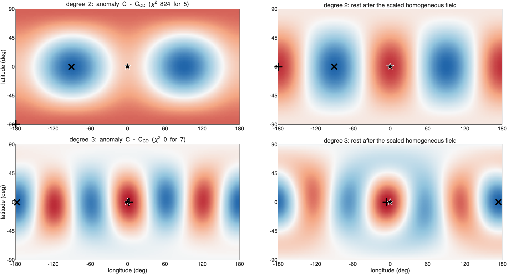
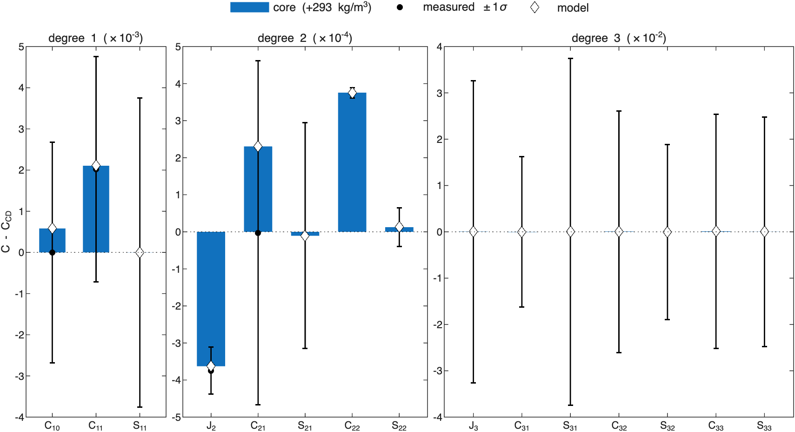
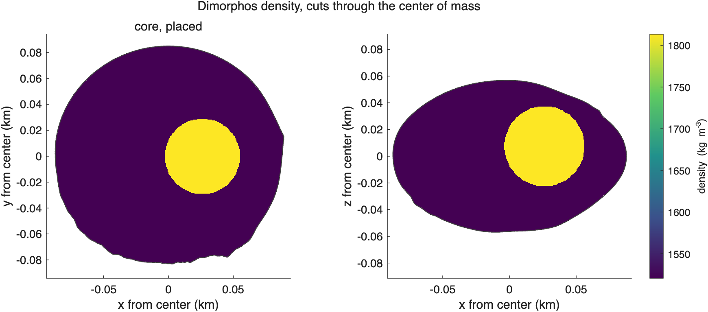
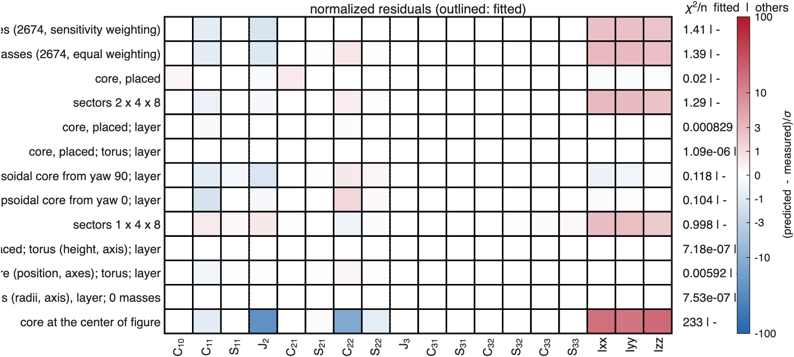

ROB-DATA5: Dimorphos#
Last edited October 27, 2026
In short. The smallest anomaly of the six: degree 2 differs from constant density mainly in (+27σ), two moments are 4 to 5σ lower, and the center of mass is not measurably off. A single dense sphere, +293 kg/m³ placed 27 m from the center toward +x, explains all of it with 4 parameters (reduced χ² 0.03), and it reproduces ROB's exact values to degree 10 better than any other solution: the hidden interior is close to one dense body on the +x side. The sector grids and point masses fit with 3 to 8 effective parameters but reproduce little beyond degree 2. At the GRASS surface point every solution is within 2%, as constant density nearly is: the anomaly is too small for one point to choose between them.
| Kind | Best solution of the kind | Parameters | Reduced χ² | p | AIC | Mean squared residual, degrees 1–3 | GRASS acceleration |
|---|---|---|---|---|---|---|---|
| components | one dense sphere, placed | 4.0 | 0.03 | 1.00 | 8.4 | 0.02 | +0.2% |
| search | core, torus, layer | 9.0 | 0.000002 | 1.00 | 18.0 | 0.000001 | |
| point masses | 2,674, sensitivity weighting | 2.8 | 1.66 | 0.05 | 30.8 | 0.28 | −0.6% |
| sectors | 2 × 4 × 8 | 4.3 | 1.70 | 0.05 | 31.9 | 0.04 | −0.3% |
Constant density gives −0.6% at the surface point. (How to read these pages.)
1. What the measurements say#

C - C_CD 1-sigma sigma what it says
C20 3.744e-04 6.327e-05 5.9 J2 lower: mass toward the poles or the center, away from the equator
C22 3.752e-04 1.375e-05 27.3 mass toward the +-x ends more than +-y (elongation along x)
Ixx -2.453e-03 5.053e-04 -4.9 Ixx: mass closer to the x-axis
Izz -2.863e-03 6.527e-04 -4.4 Izz: mass closer to the z-axis- +27σ: more mass toward the ends of the x-axis than the shape gives; J2 6σ lower: a little toward the poles or the center.
- Ixx and Izz 5σ and 4σ lower: mass closer to the x-axis and to the spin axis, that is, along x.
- The center of mass: 0.31 m toward +x, below its 1σ (0.4–0.6 m): no measurable offset.
2. Where the mass is#

Center of mass 0.31 m from the center of figure toward lat 0, lon -0 (1 sigma): the anomalous mass is on that side (or a deficit on the other).
Degree 2 (chi-square 824 for 5): second moment of the anomaly triaxial, values 0.42, 0.16, -0.58 of their spread.
axis toward (largest): lat +89 lon -137 and lat -89 lon 43, +-32 deg
axis middle: lat +1 lon 1 and lat -1 lon -179, +-34 deg
axis away from (smallest): lat +1 lon 91 and lat -1 lon -89, +-25 deg
mass moved toward the axis through lat +89 lon -137 and lat -89 lon 43 and away from the axis through lat +1 lon 91 and lat -1 lon -89.
Rest of degree 2 (without the scaled homogeneous field): triaxial, values 0.48, 0.05, -0.52.
mass moved toward the axis through lat +0 lon -180 and lat -0 lon 0 and away from the axis through lat +0 lon 90 and lat -0 lon -90.
Each degree on the sphere (strongest excess / strongest deficit; rest after the scaled homogeneous field):
degree 2 chi2 824 for 5: excess lat -90 lon -180, deficit lat +0 lon -90; rest: excess lat +0 lon -180, deficit lat +0 lon -90- The rest of degree 2 (without the scaled field of constant density) moves mass toward the x-axis (longitudes 0° and 180°) and away from the y-axis: more mass along x.
- With a center-of-mass offset this small, the mass along x is either on both sides, or one compact body near the center: a core placed by its χ² profile along the (insignificant) offset went 27 m toward +x.
3. The solutions compared#

- The models with a core match every coefficient and moment within 0.5σ. The point masses and the sector grids match the coefficients within 1.6σ but leave all three moments 2 to 3σ off: smoothed as much as the measurements allow, they do not reach the moments.
- The one sphere does it with the fewest parameters that fit closely: AIC 8.4, against 18 for a core with a torus and a layer, which add parameters the measurements do not need, and 31 to 35 for the smoothed solutions.
AIC solution kind params chi2/nu p AIC res^2 1-3 largest exact2-4 exact5-10
1 core, placed components 4.0 0.0257 1 8.4 0.0224 C21 0.70 0.87
2 core, placed; layer components 5.0 0.00115 1 10.0 0.00187 C11 0.91 0.73
3 core, placed; torus; layer components 6.0 1.63e-06 1 12.0 1.31e-06 C31 0.89 0.38
4 ellipsoidal core from yaw 0; layer components 8.0 0.187 1 17.9 0.235 C11 -0.71 0.05
5 core, placed; torus (height, axis); layer components 9.0 1.44e-06 1 18.0 8.66e-07 C31 0.89 0.36
6 search: core, torus (radii, axis), layer; 0 masses search 9.0 1.51e-06 1 18.0 9.06e-07 C31 0.88 0.64
7 ellipsoidal core (position, axes); torus; layer components 9.0 0.0118 1 18.1 0.013 C11 -1.61 -48.68
8 ellipsoidal core from yaw 90; layer components 8.0 0.212 1 18.1 0.136 C20 -1.13 -15.62
9 point masses (2674, sensitivity weighting) point masses 2.8 1.66 0.05 30.8 0.282 C22 0.60 0.05
10 point masses (2674, equal weighting) point masses 3.0 1.67 0.05 31.0 0.113 C20 0.58 0.32
11 sectors 2 x 4 x 8 sectors 4.3 1.7 0.05 31.9 0.0357 C11 0.53 -1.63
12 sectors 1 x 4 x 8 sectors 8.3 1.84 0.05 34.5 0.0515 C11 -1002.92 -4991.20
13 core at the center of figure components 1.0 246 0 4189.2 70 C20 -5.97 -8.25
Ordered by AIC = chi2 + 2 x params (Akaike information criterion: the fit with a penalty for every parameter; lower is better).4. The best solution: one dense sphere toward +x#

component type center - cof (m) dist m lat lon drho kg/m^3 rho mass kg makes most of (sigma)
core sphere [ 27 -0 7] 28 15 -0 293 +- 25 1813 3.3e+07 C22 +27, C20 +6, C11 +1
background 1521 kg/m^3 (bulk 1539); makes most of: the component's share of each coefficient in units of its 1-sigma
- The sphere (+293 ± 25 kg/m³, 3.3 × 10⁷ kg above the background, 1.2% of the mass) on the x-axis makes (+27σ) and the lower J2 (+6σ in ) at once: a mass on the x-axis lengthens the body along x. Its offset of 27 m with this mass moves the center of mass by 0.33 m, within the measured 0.31 ± 0.4 m.

5. The solutions side by side#

solution (AIC rank) moved (% M) excess at (m) deficit at (m)
1. core, placed 1.11 [27 -0 7] [-3 -0 -1]
6. search: core, torus (radii, axis), layer; 0 masses 1.01 [29 0 0] [-3 -0 0]
9. point masses (2674, sensitivity weighting) 0.55 [0 -0 -0] [1 -0 0]
11. sectors 2 x 4 x 8 0.38 [10 1 -0] [-11 1 1]
correlation of the cells of each pair:
1 6 9 11
1 1.00 0.88 0.35 0.37
6 0.88 1.00 0.36 0.37
9 0.35 0.36 1.00 0.44
11 0.37 0.37 0.44 1.00
moved: the mass above the bulk density M/V (equal to the mass below it), in 8 m cells; excess at, deficit at: where that mass is centered, from the center of figure.The model of one sphere and the search's model are nearly the same (correlation 0.88): one dense body of about 30 m radius, 27 to 29 m toward +x; the search's torus and layer are nearly empty. The point masses and the sector grid move half as much mass or less (0.4–0.6% of M against 1.0–1.1%) and keep it near the center: the point masses in two lobes 10 to 15 m on either side of the center along x, the sector grid in the inner sectors, a little more toward +x (its excess centered 10 m toward +x). All four put the extra mass along the x-axis, which is what says; whether it is one body off center or spread about the center, the measurements leave open (the center-of-mass offset is below its 1σ). ROB's exact values to degree 10 favor the one sphere (section 7).
6. Independent check: the GRASS surface point#
surface point [85.4 7.5 12.0] m; every model consistent with the coefficients and inertia, and the best of each kind
U (m^2/s^2) |a| (m/s^2) |a| vs % angle deg
given 2.232206e-03 3.031167e-05 0.000 0.000
homogeneous 2.223924e-03 3.011989e-05 -0.633 0.099
1. point masses (2674, sensitivity weighting) 2.225167e-03 3.014253e-05 -0.558 0.079
2. point masses (2674, equal weighting) 2.225634e-03 3.016461e-05 -0.485 0.076
3. core, placed 2.234324e-03 3.036783e-05 0.185 0.127
4. sectors 2 x 4 x 8 2.227757e-03 3.021568e-05 -0.317 0.109
5. core, placed; layer 2.234525e-03 3.036208e-05 0.166 0.021
6. core, placed; torus; layer 2.233207e-03 3.034004e-05 0.094 0.013
7. ellipsoidal core from yaw 90; layer 2.224372e-03 3.014670e-05 -0.544 0.015
8. ellipsoidal core from yaw 0; layer 2.218248e-03 2.994379e-05 -1.214 0.076
9. sectors 1 x 4 x 8 2.253347e-03 3.090452e-05 1.956 2.076
10. core, placed; torus (height, axis); layer 2.233182e-03 3.033726e-05 0.084 0.013
11. ellipsoidal core (position, axes); torus; layer 2.227058e-03 3.023473e-05 -0.254 0.183The surface point is 86 m toward +x, near the sphere's side, but the anomaly changes the acceleration there by only 0.6% (constant density). The models with a core give +0.1% to +0.2%, the point masses −0.5% to −0.6%, the sector grids −0.3% and +2.0%: all close, as the coefficients already were.
7. Beyond the fitted coefficients#
model fitted to chi2/nu chi2/n fitted chi2/n others
core, placed degrees 1-2 0.0514 0.0327 1.64e-06
core, placed degrees 1-3 0.0257 0.02 -
sectors 2 x 4 x 8 degrees 1-2 2.17 1.06 1.15e-05
sectors 2 x 4 x 8 degrees 1-3 1.7 1.29 -
point masses (2674, sensitivity weighting) degrees 1-2 1.94 1.4 2.3e-06
point masses (2674, sensitivity weighting) degrees 1-3 1.66 1.41 -
point masses (2674, equal weighting) degrees 1-2 1.98 1.34 2.09e-06
point masses (2674, equal weighting) degrees 1-3 1.67 1.39 -
Fraction of each degree's anomaly (exact values) reproduced by the fit to every degree, 1 - |model - given|^2/|given|^2:
model 1 2 3 4 5 6 7 8 9 10
core, placed 0.92 0.81 0.38 0.92 0.45 0.97 0.87 0.98 0.96 0.99
sectors 2 x 4 x 8 0.48 1.00 0.31 0.29 -3.03 -0.83 -2.04 -0.07 -2.38 -1.39
point masses (2674, sensitivity weighting) -0.01 0.98 0.19 0.63 0.37 -0.44 0.36 0.41 0.47 -0.88
point masses (2674, equal weighting) 0.03 0.99 0.22 0.52 0.24 0.45 0.42 0.52 -0.16 0.46
The one sphere reproduces ROB's exact values to degree 10 (81–99% of degrees 2, 4 and 6 to 10; 38–45% of degrees 3 and 5), although it was fitted to degree 2 and the moments only. No other solution comes close beyond degree 2: the sector grids and point masses reproduce 98–100% of degree 2 and at most two thirds of any higher degree. The hidden interior is, to this precision, one dense compact body.
8. Details#
